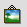

| Verschiebt Rahmen und andere Objekte auf einer Seite | |
| Dreht einen Rahmen oder ein anderes Scribus-Objekt | |
| Wechselt in den Bearbeitungsmodus eines Rahmens | |
| Zoomt in einem Dokument, bei gedrückter SHIFT-Taste wird ausgezoomt | |
| Einen neuen Textrahmen auf der Seite plazieren | |
|  | Einen neuen Bildrahmen auf der Seite plazieren |
| |
Ein Rechteck aufziehen |
| |
Eine Ellipse aufziehen |
| |
Eine Linie einfügen |
| Textrahmen miteinander verketten | |
| Verkettung von Textrahmen wieder aufheben |